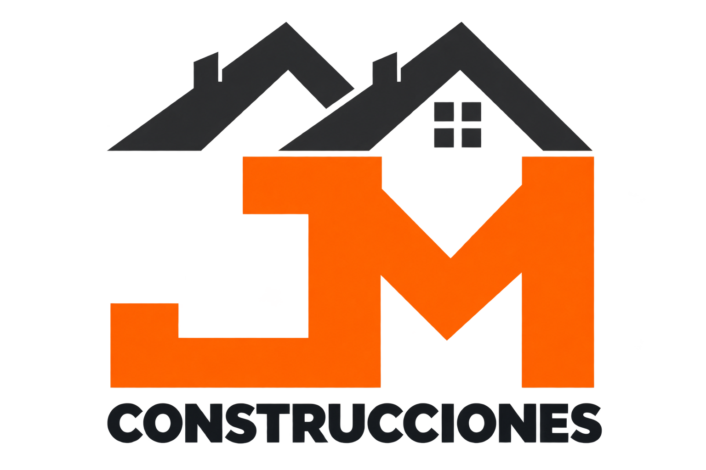
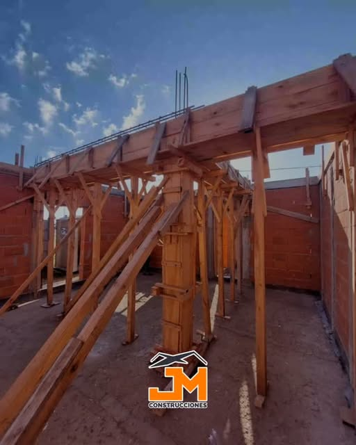

Te escuchamos
Conversamos sobre tus ideas, tus necesidades y el espacio que querés transformar.

En Mendoza Construcciones trabajamos hace más de 15 años para que nuestros clientes sigan confiando. Acompañamos cada proyecto con trabajo, dedicación y atención a los detalles.
Construcción, reformas y terminaciones para transformar tus espacios. Conocé nuestros trabajos y contanos qué querés hacer en Rosario.
Conocé cómo trabajamos ↗
01 / CONSTRUIRTrabajos de albañilería y ejecución de obra para dar forma a tu proyecto.
 02 / TRANSFORMAR
02 / TRANSFORMARRenovamos y ampliamos espacios según las necesidades de cada obra.
 03 / TERMINAR
03 / TERMINARCuidamos los acabados de paredes, pisos y cielorrasos.
Fotos de trabajos compartidos en nuestro Instagram. El hero y la sección parallax son renders conceptuales ilustrativos.
Conversamos sobre tus ideas, tus necesidades y el espacio que querés transformar.
Exploramos alternativas y construimos una propuesta que conecte con tu manera de habitar.
Acordamos el alcance y los siguientes pasos para desarrollar tu proyecto.